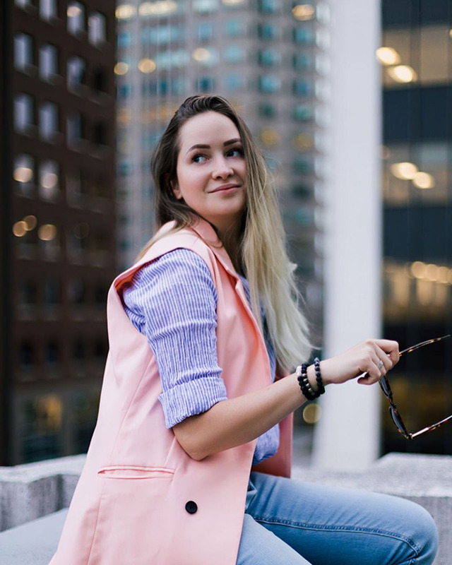
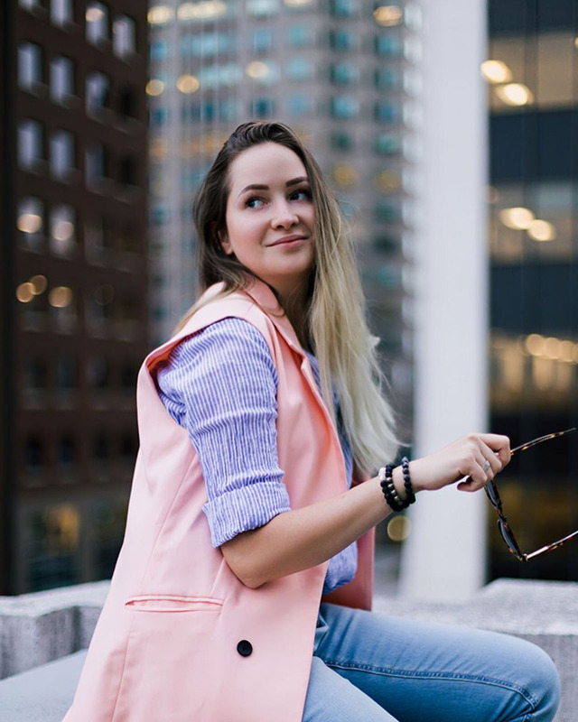

Hi, i'm MARIA RISEN
I'm a graphic and web designer living in Raleigh, NC.
I love color and vivid, nature art inspired form. For commission, collaboration, wholesale or other inquiries, don’t hesitate to get in contact.
I love color and vivid, nature art inspired form. For commission, collaboration, wholesale or other inquiries, don’t hesitate to get in contact.
